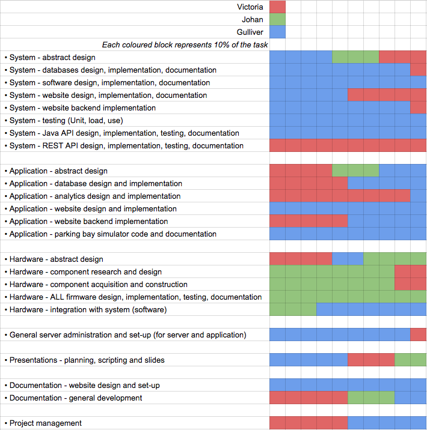

The Team
Project Coordinators
Project Management
Who did what
Below is a table of the main tasks of our presentation: 
Something to note is that each field does not always carry the same amount of work load. The fields simply act as a percentage guide.
As you can see, we split up the work quite equally. Gulliver worked the most on the System, Victoria on the Application and Johan on the Hardware. We did however have an overlap in each section of people providing support where possible.
Bi-Weekly Reports
Term 1
Term 2
Development Timeline
16-01-2015: Decided to use Contiki OS for our micro-controllers
After doing research over the christmas break, we came together as a group and decided on specifics for the project. We had already agreed on using ZigBee, but not yet on how to actually implement it. Our professor, Graeme McPhillips suggested that we use Contiki, because he said it would help us skip the super low-end part of communicating with the micro-controller and just let us use their many pre-built libraries. We did some research into it and started experimenting with it.
18-01-2015: Decided to separate analytics from main database
After our talk with our supervisor Leslie, we decided that the importance of analytics was far less than what we had initially planned. We decided that it would not be a part of what our system does, but rather something that can be done with the help of our system. For that reason, we seperated the analytics from our main database and made it a side project. This meant we would only do small analytics for the use case, instead of implementing as part of the main system.
This also allows for future developers to create their own analytics and not have to work around or use our not as professional analytics.
20-01-2015: Moved to a Cassandra database backend
After our client meeting on the same day, we decided it was time to start using a noSQL database.
Here are some reasons why:
- noSQL databases are more dynamic, allowing for greater analytical usage
- More scalable when it comes to large datasets like sensor readings
We listened to our client and made the change. Although we could have done the proof of concept without it, it would not be future proof. A few days later, we requested for a Cassandra database to be set up on the UCL server.
25-01-2015: Decided to use the MC1322x micro-controller
After looking into what hardware would work with Contiki, we came up with a list of micro-controllers that would be suitable for our project. We then emailed Graeme about it, who informed us he could build us boards for the MC1322x controller. This was one of the ones on our list, so since this was what we had available, we ended up using this.
02-02-2015: Virtual machine configure for everyone
As we knew we would be doing some java code in the background, we wanted to set up a virtual machine that could run this for us 24/7. At this point in time it is fully functional and working for everyone.
02-02-2015: Research into front end web technology begins
As we knew we would be dealing with live data, we began looking into ways to display this data on a web page. Since we wanted the data in our noSQL database to update the website as soon as a change happened, we had to look into different ways of doing this.
11-02-2015: Cassandra database is set up and code written to simulate sensors.
After doing some research into how to set up Cassandra databases, we finally had it working. It was then decided that code to simulate sensors could be useful, as we only had 4 physical sensors available.
18-02-2015: Received hardware parts, initial hardware testing begins.
While waiting for the hardware components to be build, further research was done into Contiki, so that we could start testing it as soon as we had the hardware.
21-02-2015: Cassandra database redesigned and made public
After further research, we decided on completely remaking the Cassandra database and design it in a more efficient way. This included setting key-spaces up properly and allowing for public use.
23-02-2015: code written to access database using node.js
After realising the advantages of using node.js, we decided to write an API for accessing it in this way. Before this we simply accessed it using java code, but node.js allows for easier to usage when it comes to web development.
05-03-2015: Decision to use Arduino GSM shield.
As we were getting closer to having the ZigBee and infrared components of our hardware working, it was time to start thinking of ways to send the data globally. Initially we were planning to use 3G, but later found out that it was not necessary and that GSM would be lower power and cheaper. We found out that the Arduino had a shield for GSM communication and we requested to get one.
08-03-2015: Cassandra database now fully designed
All collum families are now ready for data entry. This is the version of our database we pretty much decided to use in the end. Although it is not the most efficient on large scales, it works for our project.
10-03-2015: The decision to use UDP was made
After further research into Arduino and the GSM shield, we found that it was simpler to send a UDP string, as Arduino already provided libraries for this. We therefore decided that to send data to the authentication server, it had to be send as a UDP string. Although we knew TCP was the better option for this project, we decided for the sake of implementation to just do UDP. In the final version, the server should be able to accept both TCP and UDP.
12-03-2015: Java API now includes features for adding and removing sensors.
At this point in time, our Java API is pretty well defined. We have a lot of the functions we want running and have added features specifically for development purposes.
18-03-2015: Battery packs assembled
On this day we assembled the battery packs and acquired any last pieces of hardware. We decided to go with the battery packs, as we wanted our proof of concept to be as close to the real thing as possible.
20-03-2015: Began building HTML/CSS backbone of website GUI
As the back end was getting close to being completed, it was time to start designing the front end and test out ways to display our database info. Tests were done using both the java API and the node.js API. We decided node.js was better for simple data readings and that the java API was better for more hardcore analytics
20-03-2015: Began building HTML/CSS backbone of website GUI
As the back end was getting close to being completed, it was time to start designing the front end and test out ways to display our database info. Tests were done using both the java API and the node.js API. We decided node.js was better for simple data readings and that the java API was better for more hardcore analytics
24-03-2015: Began discovering issues with our provided GSM shield
As we started coding our GSM shield we started noticing problems with the hardware. The sim card provided with the device was coming up as invalid. The next few weeks were spent trying out different sim cards and trying to get into contact with the creators of the shield
17-04-2015: Switched from using GSM shield to using a computer to send UDP packets
After many failed attempts at using the GSM shield, the makers of the shield finally returned our messages and informed us that their service was down. They did not inform us when it would be back up and we were unable to find another shield in time. For this reason we decided to go with a computer for the proof of concept, although ideally this should be done via GSM.
References
- The Arduino website: http://www.arduino.cc
- The Contiki website: http://www.contiki-os.org
- The Sensor board: Stamp.pdf
- The Microcontroller: MC1322x.pdf
- The Infra-Red Sensor: Sharp_gp2y0a02.pdf
- ZigBee Documentation: ZigBee.pdf
- ZigBee Documentation: ZigBee.pdf
- The Arduino Mega: http://www.arduino.cc/en/Main/arduinoBoardMega2560